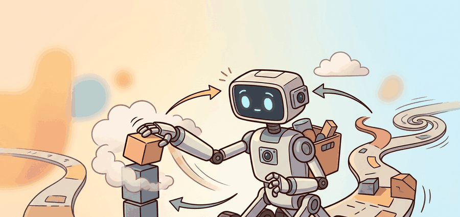

"I collected the demonstration in a kitchen. The robot insists it has never been to one."
A Portable Gripper

This section builds on the relative-action representation introduced in section 22.7 and the SE(3) coordinate-frame conventions from section 4.4. The handheld collection ideas developed here are extended in section 23.4, which adds immersive visual feedback through VR teleoperation, and in section 23.5, which covers the dataset-card discipline needed to make portable demonstrations usable for policy training.
A researcher walks into a coffee shop, pulls a custom gripper from a backpack, and spends forty minutes collecting pouring and stirring demonstrations on a real cluttered counter. No robot is present. Back in the lab, that footage trains a policy that a robot arm executes the next morning. This is the Universal Manipulation Interface (UMI) premise: untether data collection from the robot entirely, so demonstrations can be gathered anywhere humans go. At a moment when the bottleneck in embodied AI is not compute but diverse, in-context manipulation data, the ability to collect in any kitchen, workshop, or warehouse without shipping a robot there changes the scaling calculus. The sections below explain how relative action representations make that portability rigorous, what calibration discipline the approach demands, and where the geometry breaks down.
A demonstration collected anywhere in the world is only as portable as the calibration discipline that traveled with it.
From Human Motion To Robot Action
The core abstraction is a relative trajectory. Instead of asking the policy to imitate absolute human pose, the dataset stores local end-effector displacements over a short horizon. The payoff is concrete: shipping a robot to a new site costs weeks and thousands of dollars; a handheld gripper fits in a backpack and reaches the same site in an hour, so a team of five people can collect demonstrations across twenty kitchens in a single day instead of a single lab in a single month. A dataset that would have required 18 months of robot-site scheduling to reach 500 diverse episodes can be assembled in two weeks of handheld collection across 30 real environments, because the bottleneck shifts from robot availability to human walking speed.
$$\Delta x_{t:t+H} = (T_t^{-1}T_{t+1}, T_t^{-1}T_{t+2}, \ldots, T_t^{-1}T_{t+H}),$$
where $T_t$ is the gripper pose at time $t$. Relative actions reduce dependence on a specific room coordinate frame and make it easier to deploy the learned behavior on a robot with a different base pose.
Relative actions are, in a sense, a universal adapter plug for robot demonstrations: the outlet (room frame) changes country to country, but the device (your gripper trajectory) works everywhere, as long as you remembered to calibrate the adapter before leaving home.
Handheld systems trade robot hardware cost for calibration discipline. Camera extrinsics, gripper geometry, timing, and object scale become the bridge between human demonstration and robot execution.
A common assumption is that relative actions make UMI demonstrations universally deployable on any robot without further configuration. This is incorrect: relative actions remove dependence on the room coordinate frame, but they do not remove dependence on gripper geometry, camera-to-gripper extrinsics, or the action-space bounds of the target hardware. A demonstration collected with a 90 mm parallel-jaw gripper cannot be replayed on a 65 mm gripper without rescaling the gripper-width channel, and a mismatched camera mount shifts every relative action in a session by a fixed bias that the policy cannot learn to correct. The correct mental model is that relative actions are a necessary condition for cross-site portability, not a sufficient one: the full bridge requires that the handheld unit's geometry and calibration are matched, or explicitly remapped, to the deployment robot before any episode enters training.
Re-run the camera-to-gripper extrinsic calibration at the start of every collection session, not just when you swap hardware. A single accidental knock to the handheld unit can shift the camera mount by several millimeters, and because UMI stores trajectories in the camera frame, that shift silently biases every relative action in the entire session. The UMI reference implementation stores calibration residuals (reprojection error per ChArUco corner) alongside each episode; set a hard rejection threshold of 1.5 pixels and discard any session that exceeds it rather than including it in a "stress" split, because the error is systematic rather than random and will corrupt the action distribution rather than add useful diversity.
Code Fragment 1 shows a compact version of the relative-action transform used in many trajectory datasets. The example uses one-dimensional poses so the arithmetic is inspectable, but the same idea extends to full SE(3) transforms from Chapter 4.
# Convert absolute gripper positions into local relative actions.
# This teaches the representation before a full SE(3) trajectory library hides it.
positions_m = [0.40, 0.43, 0.47, 0.46]
relative_actions = []
for current, nxt in zip(positions_m, positions_m[1:]):
relative_actions.append(round(nxt - current, 3))
print(relative_actions)
print("largest step:", max(abs(x) for x in relative_actions), "m")The pedagogical transform above is a few lines because it is one-dimensional. In production, use a robotics transform library, UMI tooling, or LeRobot conversion utilities to handle SE(3), camera streams, timestamps, and serialization consistently.
A team teaching towel-folding can collect handheld demonstrations in several real kitchens, then deploy the policy on one robot cell. The dataset card should state which towels, table heights, lighting conditions, and gripper calibrations were seen during collection.
Data Collection Recipe
Latency matching deserves special attention because its effect is counterintuitive. A policy is a function that maps an observation to an action. If the observation was always captured 65 ms before the action was executed during collection, then the policy learns to anticipate 65 ms into the future. At deployment, if the pipeline delivers observations 130 ms before execution, the policy now anticipates twice as far and systematically overshoots. The fix is not to minimize latency but to make it consistent, a principle called latency-invariant policy training: measure the end-to-end delay in your robot stack, then replay that exact delay during training by artificially offsetting the observation timestamps in the dataset. This is why step 4 in the recipe below is not a performance optimization but a correctness requirement.
Think of a goalkeeper who trained for years on a field where the ball arrives 0.1 seconds after the striker kicks it, and is then moved to a field where the ball travels twice as fast. Every dive the keeper practiced is timed for the old flight delay, so every save attempt arrives slightly too early. The keeper is not confused about direction, just timing. A policy trained with a 40 ms observation delay and deployed with a 120 ms delay makes the exact same error: it reaches for where the object will be in 40 ms, but the world has been updated for 120 ms by the time the command executes, so every motion overshoots by a consistent margin. Matching the delay in training to the delay in deployment is the equivalent of practicing on the same-speed field where the game will actually be played.
- Record synchronized egocentric video, gripper pose, gripper width, and task instruction.
- Calibrate gripper geometry and camera extrinsics before each session.
- Store both absolute sensor poses and relative policy actions.
- Match inference-time latency during training so the policy sees the same delay it will experience on hardware.
- Validate with a robot replay protocol before counting the episode as deployable data.
The robot replay protocol is critical because handheld collection introduces a gap that only physical execution can close. A human operator naturally compensates for hand tremor, minor calibration drift, and frame-rate irregularities in ways that never appear in the recorded trajectory. If those compensations corrupt the relative actions, the episode looks valid in the manifest but fails when the robot attempts to execute it. Undetected errors carry asymmetric costs: a silent bad episode trains the policy on physically impossible transitions, and engineers then blame model capacity rather than data quality.
In practice the protocol works by commanding the recorded relative action sequence directly to the robot arm in an open-loop fashion, without any policy inference. The arm executes each $\Delta x_t$ step, and the end-effector position is compared against the expected pose derived from the original trajectory. Tracking error above a task-specific threshold (typically 2 to 5 mm for pick-and-place tasks) flags the episode for recollection. This open-loop replay isolates data quality from policy quality: if the robot cannot reproduce the recorded motion at all, the episode should be discarded rather than passed to training.
Algorithm: UMI Handheld Episode Processing
Input: Raw episode recording with absolute gripper poses $T_0, T_1, \ldots, T_N \in SE(3)$, egocentric video frames $\{v_t\}$, gripper widths $\{w_t\}$, camera-to-gripper extrinsic $E$, measured pipeline latency $\delta$ (ms), and action-chunk horizon $H$
Output: Deployable episode $\mathcal{D} = \{(o_t, \Delta x_{t:t+H}, w_t)\}$ with calibration residual $\epsilon$ and readiness flag $r \in \{0, 1\}$
- Compute camera-to-gripper extrinsic $E$ via ChArUco board calibration; record reprojection residual $\epsilon$. Reject the session if $\epsilon > 1.5$ px.
- For each timestep $t$, project the raw camera-frame pose into the gripper frame: $\tilde{T}_t = E^{-1} T_t E$.
- Compute the relative action chunk over horizon $H$: $$\Delta x_{t:t+H} = \bigl(T_t^{-1}T_{t+1},\; T_t^{-1}T_{t+2},\; \ldots,\; T_t^{-1}T_{t+H}\bigr).$$
- Shift observation timestamps by $+\delta$ ms so the training data mirrors the inference-time observation-to-action delay. This alignment ensures the learned policy $\pi_\theta$ anticipates the correct horizon.
- Clip gripper widths to the hardware range $w_t \in [w_{\min}, w_{\max}]$ and normalize: $\hat{w}_t = (w_t - w_{\min})/(w_{\max} - w_{\min})$.
- Pair each latency-shifted observation $o_t = (v_{t+\delta}, \tilde{T}_t, \hat{w}_t)$ with its relative action chunk $\Delta x_{t:t+H}$.
- Run a robot replay protocol on a held-out subset: command $\Delta x_{t:t+H}$ and measure end-effector tracking error $\|\hat{T} - T^*\|$. Accept the episode only if the mean error is below the task tolerance $\alpha$.
- Attach calibration residual $\epsilon$, latency offset $\delta$, and replay error statistics to the episode metadata for the dataset card.
- Set readiness flag $r = 1$ if $\epsilon \leq 1.5$ px and $\delta$ is consistent with the deployment pipeline; otherwise set $r = 0$ and route the episode to a review split rather than the clean training split.
In-the-wild demonstrations often include human body motion, gaze, and tactile feedback that the robot will not have. The dataset card should state which cues are available to the robot and which cues were only available to the person collecting data.
If demonstrations are collected with a camera pipeline that introduces 40 ms of latency and the robot deployment pipeline introduces 120 ms, the policy was trained on a world that responds 80 ms faster than the one it now inhabits. The result is not a crash but a subtle drift: the robot reaches for where the object was, not where it is. This failure looks like poor generalization when it is actually a timing bug. The UMI paper (Chi et al., 2024) addresses this directly by recording and replaying inference-time latency during training, so the policy's internal timing model matches deployment reality. If your robot's observed success rate drops sharply compared to collection-time replays, latency mismatch is the first variable to audit.
Hands-On Lab: Audit A Handheld Demonstration Manifest
Objective
Build a manifest that decides whether handheld demonstrations are ready for robot policy training.
What You'll Practice
- Representing relative actions.
- Checking calibration and latency fields.
- Separating collection metadata from training splits.
Setup
pip install pandasSteps
Step 1: Create the manifest rows
Start with two episodes and leave one calibration field as a latency_review so the reader must decide what evidence is missing.
# Build a handheld-demonstration manifest with one deliberate audit field.
# The example includes the stress condition explicitly so the audit can run end to end.
episodes = [
{"id": "umi_001", "camera_calibrated": True, "latency_ms": 65, "split": "train"},
{"id": "umi_002", "camera_calibrated": "latency_review", "latency_ms": 140, "split": "stress"},
]
print(episodes)Step 2: Add a readiness rule
Flag episodes with missing calibration or excessive latency.
# Apply a readiness rule that separates clean data from stress or repair data.
for episode in episodes:
ready = episode["camera_calibrated"] is True and episode["latency_ms"] <= 100
episode["split"] = "train" if ready else "review"
summary = {split: sum(ep["split"] == split for ep in episodes) for split in {"train", "review"}}
print(summary)Expected Output
The lab should print one ready episode and one review episode, then prompt a short note explaining whether the review row belongs in a stress split or should be recollected.
Stretch Goals
- Add relative-action range checks for gripper translation and rotation.
- Add language annotations and verify that each instruction matches the visible task.
Complete Solution
# Complete manifest audit for handheld demonstrations.
# It keeps clean training data separate from risky but useful stress examples.
episodes = [
{"id": "umi_001", "camera_calibrated": True, "latency_ms": 65, "split": "train"},
{"id": "umi_002", "camera_calibrated": False, "latency_ms": 140, "split": "stress"},
]
for episode in episodes:
ready = episode["camera_calibrated"] is True and episode["latency_ms"] <= 100
route = "clean-train" if ready else "stress-or-recollect"
print(episode["id"], route)Three active directions are pushing the boundaries of in-the-wild handheld collection beyond the original UMI formulation.
Direction 1: Multi-embodiment data reuse across gripper morphologies. The original UMI system assumes a fixed handheld gripper geometry; transferring a dataset to a robot with a different end-effector (parallel jaw vs. three-finger vs. suction) requires non-trivial action-space remapping. The CrossFormer work from Stanford (Doshi et al., 2024, "Scaling Cross-Embodied Learning") trains a single transformer policy across 20-plus robot morphologies by learning a shared token vocabulary for actions. The open question is whether handheld UMI datasets can serve as zero-shot source data for this cross-embodiment transfer without requiring the collector to annotate gripper-specific contact modes.
Direction 2: Visuotactile UMI extensions. Current handheld units capture only egocentric RGB and wrist pose, but many precise tasks require contact-force cues. The CMU group's SPARTN system (2024) and MIT's GelSight Svelte finger (2024) demonstrate that thin visuotactile sensor pads can be integrated into a portable handheld form factor under 300 g of added mass. Collecting force-contact observations in the wild then introduces a new calibration problem: how to normalize tactile readings across sessions where contact geometry and gripper wear shift the baseline reading.
Direction 3: Automatic demonstration quality filtering with vision-language models. Human annotators flag broken episodes by reviewing video, but at scale this is a bottleneck. Recent work from UC Berkeley (OpenVLA, Kim et al., 2024) and from the DROID dataset team (Khazatsky et al., 2024) suggests that vision-language models (VLMs) can score episode quality, task completion, and instruction alignment from raw video with recall reported above 85 percent on held-out human judgments in preliminary evaluations (as of 2024); independent replication on diverse UMI manifests has not yet been established. Applying VLM-based filtering to UMI manifests could remove the manual QA step that currently limits collection throughput.
Open problem for a PhD student: All three directions above assume the handheld collector is a trained researcher. In practice, crowdsourced UMI collection (giving kits to non-expert annotators) produces episodes with highly variable wrist motion style, lighting, and scene composition. No public benchmark exists for measuring how policy quality degrades as a function of collector skill diversity in a UMI-style dataset, nor is there a principled curriculum strategy for selecting which heterogeneous episodes to include first. Building that benchmark and identifying the data-selection criterion that best predicts downstream policy success rate is a well-scoped and currently open dissertation chapter.
Can you state which information exists in the handheld demonstration but will not exist at robot deployment time? Those missing cues are the first place to look when zero-shot transfer fails.
Handheld collection scales diversity by decoupling demonstration from robot deployment. It succeeds only when relative actions, calibration, and latency make that decoupling explicit.
Write a dataset-card paragraph that explains why a handheld-gripper split tests object generalization rather than memorization of one collector's motion style.
Project Ideas
Beginner (weekend): Build a relative-action replay auditor in Python using a LeRobot-format HDF5 dataset: load a recorded episode, compute the relative action sequence, then plot per-step translation magnitude to flag outliers caused by calibration drift. The key challenge is loading the raw SE(3) poses from HDF5 and converting them to local displacement vectors using scipy.spatial.transform without introducing numerical drift over long episodes.
Intermediate (1 to 2 weeks): Implement the full UMI episode processing pipeline from Algorithm 23.3 in simulation using MuJoCo and ROS2: record a scripted pick-and-place trajectory as absolute gripper poses, apply the latency-shift and relative-action transform, then replay the processed episode open-loop on a simulated Franka arm and measure end-effector tracking error against the ground-truth trajectory. The key challenge is correctly aligning observation timestamps with the simulated controller timestep so that the latency offset applied during processing matches the MuJoCo step size at replay, preventing the systematic overshoot described in the latency-mismatch pitfall.
What's Next
Section 23.4 studies immersive and VR teleoperation, where active visual feedback changes what the operator can perceive during collection.
Zhao, T. Z. et al. (2023). Learning Fine-Grained Bimanual Manipulation with Low-Cost Hardware.
Introduces ALOHA and ACT, making the connection between low-cost bimanual teleoperation, action chunking, and real-world manipulation data explicit.
A kinematically matched leader device study that directly compares teleoperation ergonomics and reliability against other low-cost interfaces.
Defines the handheld gripper approach, latency matching, and relative-trajectory action interface used in portable demonstration collection.
Cheng, X. et al. (2024). Open-TeleVision: Teleoperation with Immersive Active Visual Feedback.
A current reference for immersive visual feedback, active perception, and VR-style operator embodiment in data collection.
Hugging Face LeRobot Documentation.
Documents dataset conversion, policy training, and robot-control utilities that turn teleoperation logs into reusable learning artifacts.